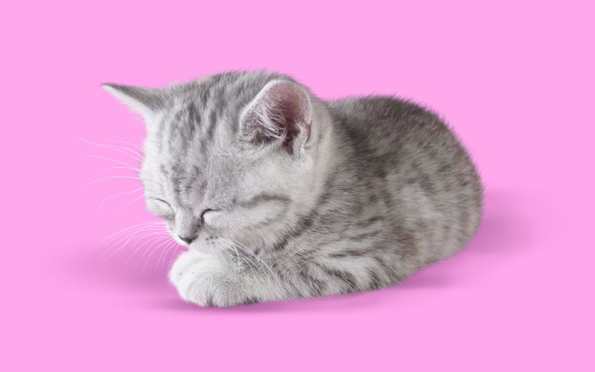
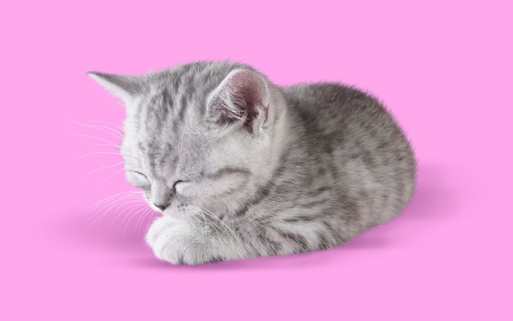
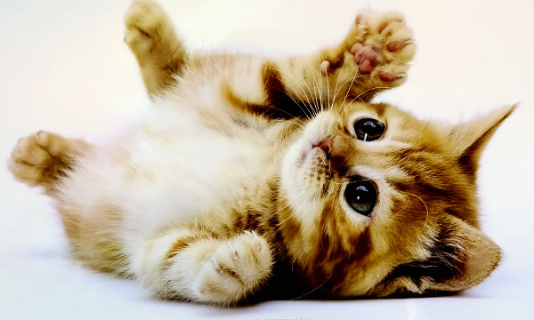
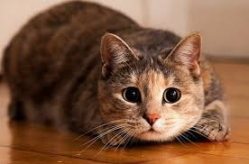
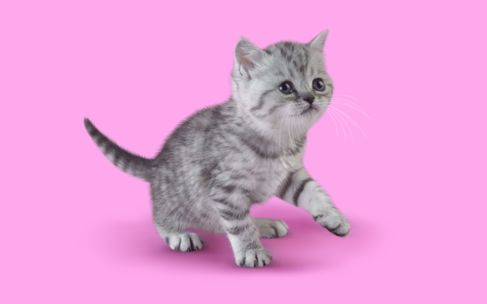
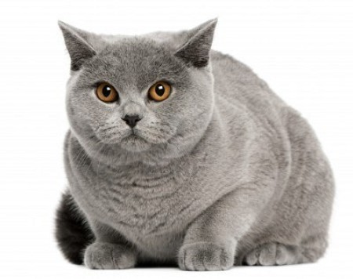
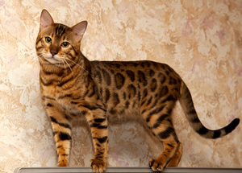
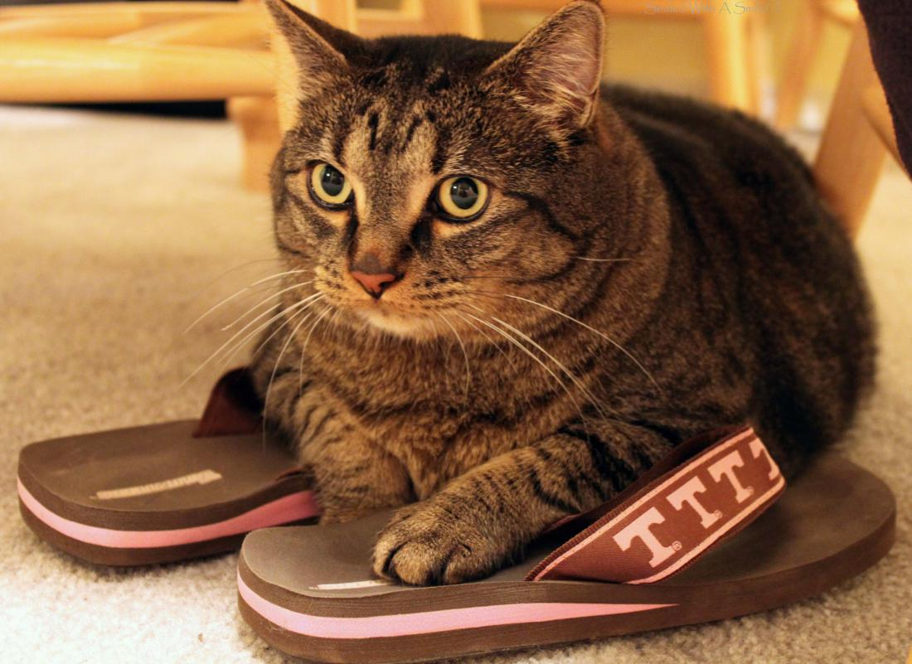

Мурзик
Возраст: 3 месяца
Статус: ищет хозяина
Маленький и веселый котенок ждет своих хозяев.
Любит играть с фонариком.

Мурзик
Возраст: 3 месяца
Статус: ищет хозяина
Маленький и веселый котенок ждет своих хозяев.
Любит играть с фонариком.

Персик
Возраст: 2 месяцев
Статус: ищет хозяина
Породистый котенок,очень ласковый и добрый.

Барсик
Возраст: 11 месяцев
Статус: ищет хозяина
Приучен к лотку,кушает все,что дадут.

Дымок
Возраст: 2 месяца
Статус: ищет хозяина
Котенок очень любит играть.
Лучший друг для ваших детей!

Рыжик
Возраст: 2 года
Статус: ищет хозяина
Очень самостоятельный кот.
Хорошо уживается с другими котами.

Васька
Возраст: 1 год
Статус: ищет хозяина
Боится грозы и детей.
Ждет заботливых хозяев.

Красотка
Возраст: 2 года
Статус: ищет хозяина
Породистая кошка.
Любит шелковые подушки и лучший корм.

Захарик и оооооооооочень длинная фамилия
Возраст: 1 год 3 месяца
Статус: ищет хозяина
Веселый кот,взяли с улицы.Болезней нет.